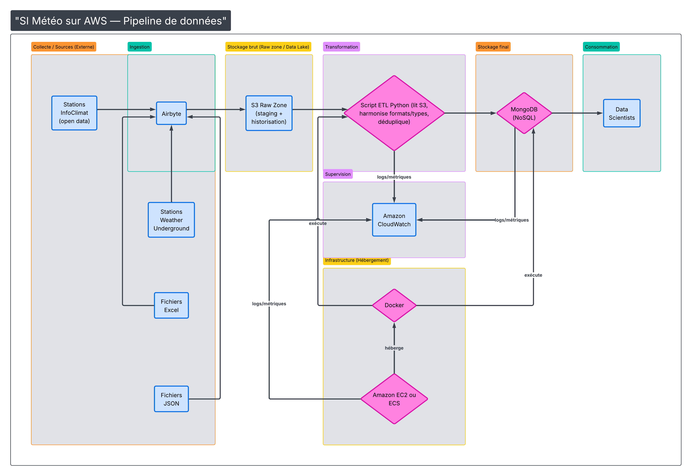

Audit de données et diagnostic de cause racine
Mise en œuvre: comparaison du CA selon dates de log, croisement entre faits OLAP et logs techniques, validation par SQL
Valeur ajoutée: identification objective de l'origine des écarts décisionnels
Auditer l'instabilité du chiffre d'affaires entre OLTP et cube OLAP, identifier la cause des écarts et proposer des correctifs de robustesse

Mise en œuvre: comparaison du CA selon dates de log, croisement entre faits OLAP et logs techniques, validation par SQL
Valeur ajoutée: identification objective de l'origine des écarts décisionnels
Mise en œuvre: séparation des faits valides/invalides, vérification des correspondances faits-dimensions et contrôles d'identifiants
Valeur ajoutée: meilleure fiabilité des indicateurs métier utilisés en reporting
Mise en œuvre: triggers SQLite (blocage insertions rétroactives, blocage suppressions incohérentes), activation FK, table Batch_Control
Valeur ajoutée: réduction du risque de dérive des KPI historiques
Mise en œuvre: articulation OLTP -> batch -> OLAP -> dataviz, schéma en étoile cible et scripts SQL d'audit
Valeur ajoutée: cadre technique lisible pour industrialiser la supervision data
Mise en œuvre: rapport d'audit structuré, recommandations priorisées, trajectoire de mise en œuvre
Valeur ajoutée: passage d'un constat technique à une feuille de route opérationnelle
Auditer l'instabilité du chiffre d'affaires entre OLTP et cube OLAP, identifier la cause des écarts et proposer des correctifs de robustesse
Notebooks d'audit, scripts SQL de contrôle et hardening, base OLAP/SQLite de POC, rapport d'audit, plan d'action